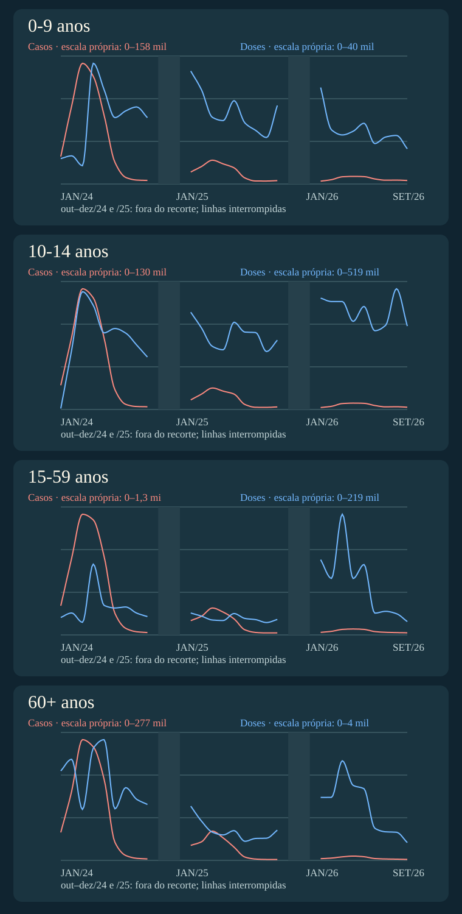

BRASIL EM ESCALA
Dengue: casos e doses
Vídeo
Pergunta e definições
Como os casos prováveis e as doses contra dengue evoluíram, mês a mês, nas quatro faixas etárias do Brasil entre 2024 e 2026?
Cada faixa reúne casos prováveis e doses aplicadas no mesmo gráfico, com escalas próprias por curva. O calendário é linear de jan/2024 a set/2026; out–dez/2024 e /2025 ficaram fora do recorte, sem interpolação. As faixas têm tamanhos populacionais diferentes. Estas contagens não são taxas.
Duas curvas por faixa
Os valores que acompanham os pontos no vídeo são de meses observados. A escala vertical é própria para cada curva.
As curvas são suavizadas visualmente por interpolação cúbica que passa pelos valores mensais observados. Não representam estimativas diárias; os meses fora do recorte permanecem interrompidos.
Vermelho: casos prováveis. Azul: doses aplicadas. Cada curva começa em zero e usa escala própria; as alturas entre curvas não são comparáveis. Outubro a dezembro de 2024 e 2025 não constam da F1.

Método
Mostrar jan/2024–set/2026 em calendário linear por faixa etária, com 20 segundos de evolução por faixa e somente data, curvas, valores mensais observados e fonte no vídeo. Detalhes de definições, escalas, limites e causalidade ficam na página metodológica. Lacunas out–dez de 2024 e 2025 ficam sem ligação ou valores. Suavização passa pelos pontos mensais exatos sem estimar dias. Casos prováveis do Sinan pelo mês de início dos sintomas; doses RNDS pelo mês da aplicação, todos os tipos. Recontagem offline dos 27 meses no CSV embutido e no agregado Sinan do manifesto F1; totais por ano/faixa reconciliados com o resumo RNDS. Os arquivos XLSX originais não trazem os filtros embutidos, que permanecem documentados no recibo F1.
Casos prováveis: notificações que não foram descartadas; nem todos têm confirmação laboratorial. Doses: registros de aplicações de todos os tipos, não pessoas, cobertura ou esquema completo. As datas medem acontecimentos diferentes; a coocorrência visual não comprova efeito das doses sobre casos.
Fontes
Captura RNDS: 29/10/2026 05:54:11. Recibos e hashes constam do pacote F1 aprovado.
27 meses
| Mês | Casos prováveis | Doses aplicadas | ||||||
|---|---|---|---|---|---|---|---|---|
| 0-9 | 10-14 | 15-59 | 60+ | 0-9 | 10-14 | 15-59 | 60+ | |
| 2024-01 | 33.909 | 24.584 | 288.888 | 60.576 | 7.904 | 3.882 | 29.935 | 2.814 |
| 2024-02 | 96.119 | 73.439 | 757.317 | 149.141 | 8.764 | 239.789 | 37.649 | 3.180 |
| 2024-03 | 149.102 | 122.755 | 1.194.932 | 261.218 | 5.701 | 477.291 | 21.674 | 1.602 |
| 2024-04 | 133.020 | 113.512 | 1.138.714 | 245.761 | 37.515 | 422.105 | 121.340 | 3.527 |
| 2024-05 | 84.994 | 72.623 | 777.408 | 175.648 | 29.328 | 310.536 | 50.685 | 3.797 |
| 2024-06 | 26.767 | 20.010 | 213.164 | 38.981 | 20.645 | 328.225 | 46.239 | 1.623 |
| 2024-07 | 8.149 | 5.174 | 65.137 | 10.573 | 22.737 | 309.549 | 47.934 | 2.288 |
| 2024-08 | 4.885 | 3.016 | 31.609 | 4.497 | 23.945 | 261.607 | 37.471 | 1.923 |
| 2024-09 | 4.436 | 2.783 | 23.356 | 3.121 | 20.621 | 212.533 | 31.418 | 1.760 |
| 2025-01 | 14.842 | 9.745 | 141.529 | 32.497 | 35.112 | 394.285 | 37.576 | 1.706 |
| 2025-02 | 21.684 | 15.647 | 185.549 | 40.272 | 29.234 | 329.824 | 32.187 | 1.233 |
| 2025-03 | 29.403 | 21.836 | 266.295 | 63.240 | 20.721 | 255.765 | 25.595 | 886 |
| 2025-04 | 24.837 | 18.663 | 225.612 | 48.473 | 19.706 | 242.037 | 24.748 | 801 |
| 2025-05 | 19.999 | 15.667 | 158.755 | 28.621 | 25.908 | 353.587 | 36.637 | 935 |
| 2025-06 | 7.489 | 5.072 | 50.604 | 7.234 | 18.990 | 313.710 | 28.278 | 600 |
| 2025-07 | 3.754 | 2.227 | 24.409 | 2.842 | 16.655 | 311.749 | 26.192 | 690 |
| 2025-08 | 3.720 | 2.156 | 19.667 | 2.042 | 14.460 | 234.893 | 21.251 | 698 |
| 2025-09 | 4.223 | 2.602 | 20.249 | 1.938 | 24.403 | 280.753 | 26.597 | 950 |
| 2026-01 | 3.519 | 1.975 | 25.409 | 3.665 | 30.004 | 451.313 | 129.064 | 1.979 |
| 2026-02 | 5.375 | 3.194 | 35.626 | 4.980 | 16.832 | 437.497 | 96.977 | 1.983 |
| 2026-03 | 8.933 | 6.031 | 54.600 | 7.657 | 15.256 | 437.421 | 207.071 | 3.132 |
| 2026-04 | 9.427 | 6.478 | 58.881 | 9.293 | 16.395 | 357.109 | 96.805 | 2.359 |
| 2026-05 | 9.131 | 6.272 | 54.766 | 7.881 | 18.872 | 417.618 | 120.682 | 2.253 |
| 2026-06 | 6.280 | 4.049 | 33.138 | 4.005 | 12.570 | 319.075 | 37.383 | 1.010 |
| 2026-07 | 4.721 | 2.658 | 25.851 | 3.063 | 14.609 | 341.192 | 40.502 | 899 |
| 2026-08 | 4.809 | 2.778 | 23.105 | 2.628 | 15.098 | 489.296 | 36.419 | 885 |
| 2026-09 | 4.398 | 2.321 | 21.057 | 2.164 | 10.942 | 338.049 | 22.840 | 559 |
Limites
- Comparação descritiva. Casos por início dos sintomas e doses por aplicação não vinculam as mesmas pessoas, coortes ou localidades; não inferir eficácia, causalidade ou casos evitados.
- Doses agregam todos os tipos de aplicação, não pessoas únicas, cobertura ou esquema completo. O código RNDS 104 não certifica fabricante nem separa origem pública/privada; não atribuir a mudança de 15–59 anos à Butantan-DV ou ao SUS.
- Cada XLSX Qlik contém só mês e total, sem filtros embutidos. A seleção de idade, imunobiológico, transcrição Não e painel de residência foi documentada na coleta; a conciliação exata com o total nacional é um controle adicional.
- As quatro faixas têm tamanhos populacionais diferentes; contagens brutas não são taxas. Não há denominador auditado nesta F1.
- Comparar somente janeiro–setembro; 2024 foi uma epidemia excepcional e 2026 é parcial, com atraso e revisão dos registros. O Espírito Santo pode estar subcontado no Sinan.
- Idades ausentes ou inválidas no Sinan permanecem fora das quatro faixas: 341, 43 e 20 casos em 2024, 2025 e 2026. A categoria RNDS 0–9 inclui bebês em dias/meses; 60+ inclui 100 anos ou mais.
- A amostra YouTube confirma circulação de dengue/vacinação em geral, não mede demanda específica por este recorte ou prevê audiência.